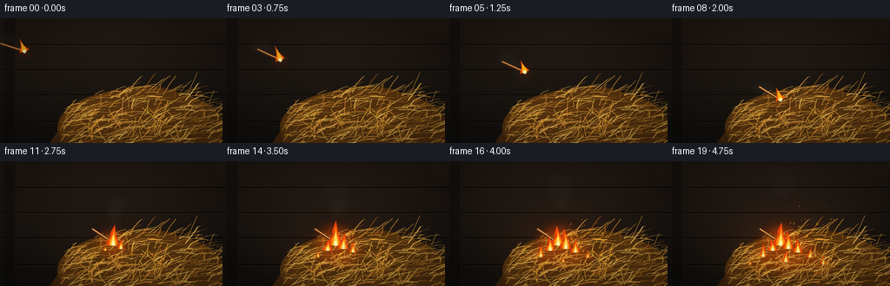
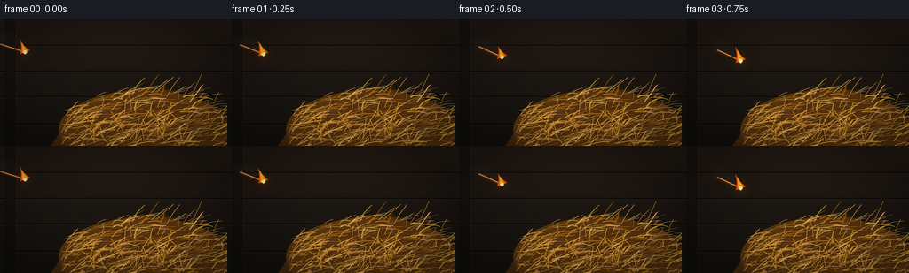

CODING AGENTS AS PIXEL WORLD MODELS
traex/GPT-5.6-Sol · material_0026
点击播放 · 原生 RGB 像素
逐轮保存的候选
回放视频、检查图与代码变化。
每份候选均可单独播放。实际图片检查记录在下方工具轨迹中。
候选 01播放与检查图
点击播放 · 原生 RGB 像素

展开代码变化
--- 上一保存版本
+++ 本次保存版本
@@ -0,0 +1,271 @@
+from pathlib import Path
+import math
+import numpy as np
+from PIL import Image, ImageDraw, ImageFilter
+import artifact_io
+
+# Deterministic procedural animation, rendered at 3x resolution for antialiasing.
+W, H, N = 256, 144, 20
+S = 3
+RW, RH = W*S, H*S
+rng = np.random.default_rng(260226)
+
+def sc(v): return int(round(v*S))
+def pts(seq): return [(sc(x), sc(y)) for x,y in seq]
+def clamp(x,a=0,b=255): return max(a,min(b,int(x)))
+
+# Persistent hay geometry: a dense, readable pile of dry stalks.
+hay = []
+for i in range(410):
+ # elliptical heap, concentrated in the lower-right foreground
+ x = rng.uniform(69, 263)
+ roof = 124 - 45*math.sqrt(max(0, 1-((x-171)/108)**2))
+ y = rng.uniform(max(73,roof), 151)
+ L = rng.uniform(8, 31)
+ angle = rng.normal(-0.16 if x < 170 else 0.12, 0.62)
+ x2 = x + L*math.cos(angle)
+ y2 = y - abs(L*math.sin(angle))*rng.uniform(.45,1.0) + rng.uniform(-3,4)
+ bend = rng.uniform(-4,4)
+ col = rng.choice([(177,116,38),(205,145,52),(225,169,67),(151,91,27),(239,190,86)])
+ width = rng.choice([0.55,0.75,1.0,1.2], p=[.25,.35,.28,.12])
+ hay.append((x,y,(x+x2)/2+bend,(y+y2)/2-2,x2,y2,col,width,rng.random()))
+
+# Static dust / barn texture.
+dust = [(rng.uniform(0,W),rng.uniform(8,111),rng.uniform(.25,1.0),rng.uniform(0,6.28)) for _ in range(85)]
+knots = [(rng.uniform(0,W), rng.choice([31,59,89,119])+rng.uniform(-10,10), rng.uniform(3,10)) for _ in range(16)]
+
+# Fire ignition sites and their delayed growth.
+fire_sites = [
+ (130,97,8.2,1.00), (139,101,10.0,.82), (121,103,10.8,.72),
+ (150,105,12.3,.70), (110,110,13.1,.54), (164,111,14.1,.48),
+ (136,116,15.0,.57), (179,119,16.2,.38), (95,119,17.0,.30)
+]
+
+def overlay(base, layer):
+ return Image.alpha_composite(base.convert('RGBA'), layer).convert('RGB')
+
+def add_glows(img, circles):
+ """circles: x,y,r,color,alpha"""
+ lay = Image.new('RGBA',(RW,RH),(0,0,0,0)); d=ImageDraw.Draw(lay,'RGBA')
+ for x,y,r,c,a in circles:
+ d.ellipse((sc(x-r),sc(y-r),sc(x+r),sc(y+r)), fill=(*c,a))
+ lay=lay.filter(ImageFilter.GaussianBlur(sc(7)))
+ return overlay(img,lay)
+
+def flame_shape(draw, x, y, height, width, phase, alpha=255):
+ # outer red-orange silhouette; y is base
+ sway = math.sin(phase)*width*.28
+ tip=(x+sway,y-height)
+ poly=[(x-width*.72,y),(x-width*.88,y-height*.18),(x-width*.34,y-height*.40),
+ (x-width*.40+sway*.35,y-height*.62),tip,
+ (x+width*.28+sway*.2,y-height*.54),(x+width*.54,y-height*.31),(x+width*.73,y)]
+ draw.polygon(pts(poly), fill=(231,66,8,alpha))
+ # orange body
+ inner=[(x-width*.52,y),(x-width*.48,y-height*.24),(x-width*.12,y-height*.45),
+ (x+sway*.65,y-height*.78),(x+width*.22,y-height*.43),(x+width*.47,y-height*.18),(x+width*.45,y)]
+ draw.polygon(pts(inner), fill=(255,137,12,alpha))
+ # hot yellow core
+ coreh=height*.53
+ inner2=[(x-width*.30,y),(x-width*.22,y-coreh*.34),(x+sway*.2,y-coreh),
+ (x+width*.26,y-coreh*.30),(x+width*.28,y)]
+ draw.polygon(pts(inner2), fill=(255,227,90,alpha))
+ if height>9:
+ draw.ellipse((sc(x-width*.13),sc(y-height*.20),sc(x+width*.15),sc(y+height*.02)),fill=(255,250,191,alpha))
+
+def match_pose(t):
+ # Thrown match arrives at hay at t ~= 8. The head travels down-right on a curved arc.
+ u=min(t/8.0,1.0)
+ x=28 + 102*u
+ y=38 + 56*u - 12*math.sin(math.pi*u)
+ angle=0.32 + 0.22*u + .05*math.sin(t*.8)
+ return x,y,angle
+
+def draw_match(img,t):
+ x,y,a=match_pose(t)
+ # head at x,y; shaft trails back along angle
+ L=29
+ ux,uy=math.cos(a),math.sin(a)
+ tx,ty=x-L*ux,y-L*uy
+ # soft directional motion blur while flying
+ blur=Image.new('RGBA',(RW,RH),(0,0,0,0)); bd=ImageDraw.Draw(blur,'RGBA')
+ if t < 8:
+ for k in range(1,5):
+ q=k*1.8
+ bd.line(pts([(tx-q*ux,ty-q*uy),(x-q*ux,y-q*uy)]),fill=(255,137,38,35-k*5),width=sc(2.2))
+ blur=blur.filter(ImageFilter.GaussianBlur(sc(1.5)))
+ img=overlay(img,blur)
+ lay=Image.new('RGBA',(RW,RH),(0,0,0,0)); d=ImageDraw.Draw(lay,'RGBA')
+ # shaft outline/highlight
+ d.line(pts([(tx,ty),(x-1.5*ux,y-1.5*uy)]),fill=(72,35,14,255),width=sc(3.2))
+ d.line(pts([(tx,ty-0.35),(x-1.5*ux,y-1.5*uy-0.35)]),fill=(225,157,80,255),width=sc(1.35))
+ # burnt head
+ rr=3.1
+ d.ellipse((sc(x-rr),sc(y-rr),sc(x+rr),sc(y+rr)),fill=(34,20,16,255),outline=(103,38,15,255),width=sc(.7))
+ img=overlay(img,lay)
+ # Match flame streams opposite travel direction, shrinking as it ignites hay.
+ if t <= 10:
+ fl=Image.new('RGBA',(RW,RH),(0,0,0,0)); fd=ImageDraw.Draw(fl,'RGBA')
+ fh = 15 + 2.3*math.sin(t*2.4) if t<8 else max(7,15-(t-8)*3)
+ fw=5.7
+ # rotate local flame around head. Flame tip points upward/back.
+ vx,vy=(-0.38*ux, -0.92)
+ norm=math.hypot(vx,vy); vx/=norm; vy/=norm
+ px,py=-vy,vx
+ base=(x,y)
+ tip=(x+vx*fh,y+vy*fh)
+ poly=[(x-px*fw,y-py*fw),(x+px*fw,y+py*fw),
+ (x+vx*fh*.52+px*fw*.25,y+vy*fh*.52+py*fw*.25),tip,
+ (x+vx*fh*.45-px*fw*.32,y+vy*fh*.45-py*fw*.32)]
+ fd.polygon(pts(poly),fill=(241,76,5,245))
+ fw2=fw*.55; fh2=fh*.76
+ poly2=[(x-px*fw2,y-py*fw2),(x+px*fw2,y+py*fw2),
+ (x+vx*fh2+px*.5,y+vy*fh2+py*.5)]
+ fd.polygon(pts(poly2),fill=(255,177,26,255))
+ fd.ellipse((sc(x-2.0),sc(y-2.0),sc(x+2.0),sc(y+2.0)),fill=(255,248,168,255))
+ img=overlay(img,fl)
+ return img
+
+def render(k):
+ t=float(k)
+ # warm low-key barn background with subtle fire-driven illumination
+ Y,X=np.mgrid[0:RH,0:RW]; xf=X/S; yf=Y/S
+ growth=max(0,(t-8)/11)
+ glow_strength=42*growth
+ fire_dist=((xf-136)/80)**2+((yf-103)/55)**2
+ base=np.zeros((RH,RW,3),dtype=np.float32)
+ base[:,:,0]=20 + 17*(1-yf/H) + glow_strength*np.exp(-fire_dist*1.8)
+ base[:,:,1]=18 + 10*(1-yf/H) + glow_strength*.40*np.exp(-fire_dist*1.8)
+ base[:,:,2]=15 + 7*(1-yf/H) + glow_strength*.07*np.exp(-fire_dist*1.8)
+ # mild film grain fixed spatially + frame variation
+ grain=np.random.default_rng(900+k).normal(0,1.4,(RH,RW,1))
+ base=np.clip(base+grain,0,255).astype(np.uint8)
+ img=Image.fromarray(base,'RGB')
+ # barn boards
+ lay=Image.new('RGBA',(RW,RH),(0,0,0,0)); d=ImageDraw.Draw(lay,'RGBA')
+ for yy in [30,59,88,119]:
+ d.line(pts([(0,yy),(256,yy)]),fill=(7,6,5,170),width=sc(1.3))
+ d.line(pts([(0,yy+1.2),(256,yy+1.2)]),fill=(74,50,31,55),width=sc(.7))
+ for x0,y0,r in knots:
+ d.ellipse((sc(x0-r),sc(y0-r*.3),sc(x0+r),sc(y0+r*.3)),outline=(51,31,19,60),width=sc(.7))
+ # distant vertical beam
+ d.rectangle((sc(5),0,sc(18),RH),fill=(9,9,8,90)); d.line(pts([(18,0),(18,H)]),fill=(79,47,24,32),width=sc(1))
+ img=overlay(img,lay)
+
+ # Smoke behind flames, appearing from match trail then rising from pile.
+ smoke=Image.new('RGBA',(RW,RH),(0,0,0,0)); sd=ImageDraw.Draw(smoke,'RGBA')
+ if t<9:
+ mx,my,ma=match_pose(t); ux,uy=math.cos(ma),math.sin(ma)
+ for j in range(4):
+ age=j+1; sx=mx-age*6*ux+math.sin(t+j)*2; sy=my-age*3-3
+ r=2.5+age*1.5
+ sd.ellipse((sc(sx-r*1.6),sc(sy-r),sc(sx+r*1.6),sc(sy+r)),fill=(98,98,91,max(9,42-j*7)))
+ if t>8:
+ for j in range(12):
+ age=(t-8)*1.2+j*.72
+ if age<=0: continue
+ sx=132+math.sin(age*.72+j*1.7)*(3+age*.22)
+ sy=94-age*4.25
+ r=3+age*.72
+ alpha=clamp(54-age*2.3,7,48)
+ sd.ellipse((sc(sx-r*.8),sc(sy-r*.56),sc(sx+r*.8),sc(sy+r*.56)),fill=(76,72,66,alpha))
+ smoke=smoke.filter(ImageFilter.GaussianBlur(sc(3.7)))
+ img=overlay(img,smoke)
+
+ # Hay pile dark underbody.
+ pile=Image.new('RGBA',(RW,RH),(0,0,0,0)); pd=ImageDraw.Draw(pile,'RGBA')
+ pd.polygon(pts([(57,144),(68,128),(80,114),(101,100),(125,88),(148,79),(171,77),(198,82),(218,94),(237,113),(256,125),(256,144)]),fill=(69,41,14,255))
+ pd.ellipse((sc(66),sc(81),sc(258),sc(171)),fill=(91,54,15,235))
+ img=overlay(img,pile)
+
+ # fire glow behind foreground stalks
+ circles=[]
+ if t<9:
+ mx,my,_=match_pose(t); circles.append((mx,my,10,(255,99,8),55))
+ for idx,(x,y,start,scale) in enumerate(fire_sites):
+ age=t-start
+ if age>0:
+ intensity=min(1,age/4)*scale
+ circles.append((x,y,8+18*intensity,(255,79,4),int(50+70*intensity)))
+ img=add_glows(img,circles)
+
+ # Hay strands. Fire light warms those close to ignition.
+ strands=Image.new('RGBA',(RW,RH),(0,0,0,0)); hd=ImageDraw.Draw(strands,'RGBA')
+ for x,y,cx,cy,x2,y2,col,width,z in sorted(hay,key=lambda q:q[8]):
+ # Quadratic curve sampled to a 3-point polyline
+ q=[]
+ for u in (0,.5,1):
+ xx=(1-u)**2*x+2*(1-u)*u*cx+u*u*x2
+ yy=(1-u)**2*y+2*(1-u)*u*cy+u*u*y2
+ q.append((xx,yy))
+ dist=math.hypot(x-136,(y-102)*1.3)
+ warm=max(0,1-dist/75)*growth
+ cc=tuple(clamp(col[j]+(42 if j==0 else 15 if j==1 else -5)*warm) for j in range(3))
+ hd.line(pts(q),fill=(*cc,240),width=max(1,sc(width)))
+ if z>.78:
+ hd.line(pts([(x2,y2),(x2+2.2,y2-1.1)]),fill=(*cc,205),width=max(1,sc(.55)))
+ img=overlay(img,strands)
+
+ # Match stays visually on top; after landing its shaft rests diagonally on hay.
+ if t<=8:
+ img=draw_match(img,t)
+ else:
+ # Fixed settled pose avoids sliding after impact.
+ img=draw_match(img,8+min(2,t-8))
+
+ # Ignition flames, after contact. Draw back to front.
+ flame=Image.new('RGBA',(RW,RH),(0,0,0,0)); fd=ImageDraw.Draw(flame,'RGBA')
+ active=[]
+ for idx,(x,y,start,scale) in enumerate(fire_sites):
+ age=t-start
+ if age<=0: continue
+ ramp=min(1,age/3.0)
+ flick=.88+.16*math.sin(t*2.35+idx*1.9)+.07*math.sin(t*5.1+idx)
+ height=(7+19*ramp)*scale*flick
+ width=(3.4+6.2*ramp)*scale
+ # keep earliest match-size ignition immediately legible
+ flame_shape(fd,x,y,height,width,t*1.8+idx,255)
+ active.append((x,y,height,width,idx))
+ img=overlay(img,flame)
+
+ # Sharp foreground hay pieces crossing flame bases, visually embedding fire in pile.
+ fg=Image.new('RGBA',(RW,RH),(0,0,0,0)); fgd=ImageDraw.Draw(fg,'RGBA')
+ for j in range(34):
+ rr=np.random.default_rng(4400+j)
+ x=rr.uniform(84,221); y=rr.uniform(111,145); L=rr.uniform(10,26)
+ ang=rr.uniform(-2.75,-.38)
+ xx=x+L*math.cos(ang); yy=y+L*math.sin(ang)
+ color=(225+int(rr.uniform(-20,20)),155+int(rr.uniform(-18,18)),52+int(rr.uniform(-12,15)),245)
+ fgd.line(pts([(x,y),(xx,yy)]),fill=color,width=sc(.8))
+ img=overlay(img,fg)
+
+ # Embers only after the pile catches; deterministic upward movement.
+ ember=Image.new('RGBA',(RW,RH),(0,0,0,0)); ed=ImageDraw.Draw(ember,'RGBA')
+ if t>10:
+ for j in range(28):
+ birth=10+(j%9)*.75
+ age=t-birth
+ if age<0: continue
+ ex=124+(j*31%63)+math.sin(age*1.8+j)*8
+ ey=108-age*(4.2+(j%5)*.65)
+ if ey<12: continue
+ r=.45+(j%3)*.22
+ a=clamp(220-age*18,20,230)
+ ed.ellipse((sc(ex-r),sc(ey-r),sc(ex+r),sc(ey+r)),fill=(255,125+(j%3)*35,29,a))
+ img=overlay(img,ember)
+
+ # Very subtle vignette, cinematic framing.
+ arr=np.asarray(img).astype(np.float32)
+ yy,xx=np.mgrid[0:RH,0:RW]
+ nx=(xx-RW/2)/(RW/2); ny=(yy-RH/2)/(RH/2)
+ vig=np.clip(1-.25*(nx*nx+ny*ny),.68,1)[:,:,None]
+ arr=np.clip(arr*vig,0,255).astype(np.uint8)
+ img=Image.fromarray(arr,'RGB').resize((W,H),Image.Resampling.LANCZOS)
+ return np.asarray(img,dtype=np.uint8)
+
+def main():
+ frames=np.stack([render(i) for i in range(N)],axis=0)
+ artifact_io.save(frames,Path(__file__).resolve().parent)
+ print('saved',frames.shape,frames.dtype)
+
+if __name__=='__main__':
+ main()
可观测工具轨迹
实际执行的命令与返回图片。
命令 1exit 0
/bin/bash -lc "cat prompt.txt && printf '\\n---RULES---\\n' && cat GENERATION_RULES.md && printf '\\n---SPEC---\\n' && cat task_spec.json"
命令 2exit 1
/bin/bash -lc "find . -maxdepth 2 -type f -printf '%p\\n' | sort && printf '\\nTools:\\n' && command -v ffmpeg && command -v python3 && python3 - <<'PY'
try:
import cv2; print('cv2',cv2.__version__)
except Exception as e: print('no cv2',e)
try:
import PIL; print('PIL',PIL.__version__)
except Exception as e: print('no PIL',e)
PY"命令 3exit 0
/bin/bash -lc "cat artifact_io.py; python3 - <<'PY' mods=['numpy','PIL','imageio','cv2'] for m in mods: try: x=__import__(m); print(m,'OK',getattr(x,'__version__','')) except Exception as e: print(m,'NO',e) PY"
命令 4exit 0
/bin/bash -lc "cat > generate.py <<'PY'
from pathlib import Path
import math
import numpy as np
from PIL import Image, ImageDraw, ImageFilter
import artifact_io
# Deterministic procedural animation, rendered at 3x resolution for antialiasing.
W, H, N = 256, 144, 20
S = 3
RW, RH = W*S, H*S
rng = np.random.default_rng(260226)
def sc(v): return int(round(v*S))
def pts(seq): return [(sc(x), sc(y)) for x,y in seq]
def clamp(x,a=0,b=255): return max(a,min(b,int(x)))
# Persistent hay geometry: a dense, readable pile of dry stalks.
hay = []
for i in range(410):
# elliptical heap, concentrated in the lower-right foreground
x = rng.uniform(69, 263)
roof = 124 - 45*math.sqrt(max(0, 1-((x-171)/108)**2))
y = rng.uniform(max(73,roof), 151)
L = rng.uniform(8, 31)
angle = rng.normal(-0.16 if x < 170 else 0.12, 0.62)
x2 = x + L*math.cos(angle)
y2 = y - abs(L*math.sin(angle))*rng.uniform(.45,1.0) + rng.uniform(-3,4)
bend = rng.uniform(-4,4)
col = rng.choice([(177,116,38),(205,145,52),(225,169,67),(151,91,27),(239,190,86)])
width = rng.choice([0.55,0.75,1.0,1.2], p=[.25,.35,.28,.12])
hay.append((x,y,(x+x2)/2+bend,(y+y2)/2-2,x2,y2,col,width,rng.random()))
# Static dust / barn texture.
dust = [(rng.uniform(0,W),rng.uniform(8,111),rng.uniform(.25,1.0),rng.uniform(0,6.28)) for _ in range(85)]
knots = [(rng.uniform(0,W), rng.choice([31,59,89,119])+rng.uniform(-10,10), rng.uniform(3,10)) for _ in range(16)]
# Fire ignition sites and their delayed growth.
fire_sites = [
(130,97,8.2,1.00), (139,101,10.0,.82), (121,103,10.8,.72),
(150,105,12.3,.70), (110,110,13.1,.54), (164,111,14.1,.48),
(136,116,15.0,.57), (179,119,16.2,.38), (95,119,17.0,.30)
]
def overlay(base, layer):
return Image.alpha_composite(base.convert('RGBA'), layer).convert('RGB')
def add_glows(img, circles):
\"\"\"circles: x,y,r,color,alpha\"\"\"
lay = Image.new('RGBA',(RW,RH),(0,0,0,0)); d=ImageDraw.Draw(lay,'RGBA')
for x,y,r,c,a in circles:
d.ellipse((sc(x-r),sc(y-r),sc(x+r),sc(y+r)), fill=(*c,a))
lay=lay.filter(ImageFilter.GaussianBlur(sc(7)))
return overlay(img,lay)
def flame_shape(draw, x, y, height, width, phase, alpha=255):
# outer red-orange silhouette; y is base
sway = math.sin(phase)*width*.28
tip=(x+sway,y-height)
poly=[(x-width*.72,y),(x-width*.88,y-height*.18),(x-width*.34,y-height*.40),
(x-width*.40+sway*.35,y-height*.62),tip,
(x+width*.28+sway*.2,y-height*.54),(x+width*.54,y-height*.31),(x+width*.73,y)]
draw.polygon(pts(poly), fill=(231,66,8,alpha))
# orange body
inner=[(x-width*.52,y),(x-width*.48,y-height*.24),(x-width*.12,y-height*.45),
(x+sway*.65,y-height*.78),(x+width*.22,y-height*.43),(x+width*.47,y-height*.18),(x+width*.45,y)]
draw.polygon(pts(inner), fill=(255,137,12,alpha))
# hot yellow core
coreh=height*.53
inner2=[(x-width*.30,y),(x-width*.22,y-coreh*.34),(x+sway*.2,y-coreh),
(x+width*.26,y-coreh*.30),(x+width*.28,y)]
draw.polygon(pts(inner2), fill=(255,227,90,alpha))
if height>9:
draw.ellipse((sc(x-width*.13),sc(y-height*.20),sc(x+width*.15),sc(y+height*.02)),fill=(255,250,191,alpha))
def match_pose(t):
# Thrown match arrives at hay at t ~= 8. The head travels down-right on a curved arc.
u=min(t/8.0,1.0)
x=28 + 102*u
y=38 + 56*u - 12*math.sin(math.pi*u)
angle=0.32 + 0.22*u + .05*math.sin(t*.8)
return x,y,angle
def draw_match(img,t):
x,y,a=match_pose(t)
# head at x,y; shaft trails back along angle
L=29
ux,uy=math.cos(a),math.sin(a)
tx,ty=x-L*ux,y-L*uy
# soft directional motion blur while flying
blur=Image.new('RGBA',(RW,RH),(0,0,0,0)); bd=ImageDraw.Draw(blur,'RGBA')
if t < 8:
for k in range(1,5):
q=k*1.8
bd.line(pts([(tx-q*ux,ty-q*uy),(x-q*ux,y-q*uy)]),fill=(255,137,38,35-k*5),width=sc(2.2))
blur=blur.filter(ImageFilter.GaussianBlur(sc(1.5)))
img=overlay(img,blur)
lay=Image.new('RGBA',(RW,RH),(0,0,0,0)); d=ImageDraw.Draw(lay,'RGBA')
# shaft outline/highlight
d.line(pts([(tx,ty),(x-1.5*ux,y-1.5*uy)]),fill=(72,35,14,255),width=sc(3.2))
d.line(pts([(tx,ty-0.35),(x-1.5*ux,y-1.5*uy-0.35)]),fill=(225,157,80,255),width=sc(1.35))
# burnt head
rr=3.1
d.ellipse((sc(x-rr),sc(y-rr),sc(x+rr),sc(y+rr)),fill=(34,20,16,255),outline=(103,38,15,255),width=sc(.7))
img=overlay(img,lay)
# Match flame streams opposite travel direction, shrinking as it ignites hay.
if t <= 10:
fl=Image.new('RGBA',(RW,RH),(0,0,0,0)); fd=ImageDraw.Draw(fl,'RGBA')
fh = 15 + 2.3*math.sin(t*2.4) if t<8 else max(7,15-(t-8)*3)
fw=5.7
# rotate local flame around head. Flame tip points upward/back.
vx,vy=(-0.38*ux, -0.92)
norm=math.hypot(vx,vy); vx/=norm; vy/=norm
px,py=-vy,vx
base=(x,y)
tip=(x+vx*fh,y+vy*fh)
poly=[(x-px*fw,y-py*fw),(x+px*fw,y+py*fw),
(x+vx*fh*.52+px*fw*.25,y+vy*fh*.52+py*fw*.25),tip,
(x+vx*fh*.45-px*fw*.32,y+vy*fh*.45-py*fw*.32)]
fd.polygon(pts(poly),fill=(241,76,5,245))
fw2=fw*.55; fh2=fh*.76
poly2=[(x-px*fw2,y-py*fw2),(x+px*fw2,y+py*fw2),
(x+vx*fh2+px*.5,y+vy*fh2+py*.5)]
fd.polygon(pts(poly2),fill=(255,177,26,255))
fd.ellipse((sc(x-2.0),sc(y-2.0),sc(x+2.0),sc(y+2.0)),fill=(255,248,168,255))
img=overlay(img,fl)
return img
def render(k):
t=float(k)
# warm low-key barn background with subtle fire-driven illumination
Y,X=np.mgrid[0:RH,0:RW]; xf=X/S; yf=Y/S
growth=max(0,(t-8)/11)
glow_strength=42*growth
fire_dist=((xf-136)/80)**2+((yf-103)/55)**2
base=np.zeros((RH,RW,3),dtype=np.float32)
base[:,:,0]=20 + 17*(1-yf/H) + glow_strength*np.exp(-fire_dist*1.8)
base[:,:,1]=18 + 10*(1-yf/H) + glow_strength*.40*np.exp(-fire_dist*1.8)
base[:,:,2]=15 + 7*(1-yf/H) + glow_strength*.07*np.exp(-fire_dist*1.8)
# mild film grain fixed spatially + frame variation
grain=np.random.default_rng(900+k).normal(0,1.4,(RH,RW,1))
base=np.clip(base+grain,0,255).astype(np.uint8)
img=Image.fromarray(base,'RGB')
# barn boards
lay=Image.new('RGBA',(RW,RH),(0,0,0,0)); d=ImageDraw.Draw(lay,'RGBA')
for yy in [30,59,88,119]:
d.line(pts([(0,yy),(256,yy)]),fill=(7,6,5,170),width=sc(1.3))
d.line(pts([(0,yy+1.2),(256,yy+1.2)]),fill=(74,50,31,55),width=sc(.7))
for x0,y0,r in knots:
d.ellipse((sc(x0-r),sc(y0-r*.3),sc(x0+r),sc(y0+r*.3)),outline=(51,31,19,60),width=sc(.7))
# distant vertical beam
d.rectangle((sc(5),0,sc(18),RH),fill=(9,9,8,90)); d.line(pts([(18,0),(18,H)]),fill=(79,47,24,32),width=sc(1))
img=overlay(img,lay)
# Smoke behind flames, appearing from match trail then rising from pile.
smoke=Image.new('RGBA',(RW,RH),(0,0,0,0)); sd=ImageDraw.Draw(smoke,'RGBA')
if t<9:
mx,my,ma=match_pose(t); ux,uy=math.cos(ma),math.sin(ma)
for j in range(4):
age=j+1; sx=mx-age*6*ux+math.sin(t+j)*2; sy=my-age*3-3
r=2.5+age*1.5
sd.ellipse((sc(sx-r*1.6),sc(sy-r),sc(sx+r*1.6),sc(sy+r)),fill=(98,98,91,max(9,42-j*7)))
if t>8:
for j in range(12):
age=(t-8)*1.2+j*.72
if age<=0: continue
sx=132+math.sin(age*.72+j*1.7)*(3+age*.22)
sy=94-age*4.25
r=3+age*.72
alpha=clamp(54-age*2.3,7,48)
sd.ellipse((sc(sx-r*.8),sc(sy-r*.56),sc(sx+r*.8),sc(sy+r*.56)),fill=(76,72,66,alpha))
smoke=smoke.filter(ImageFilter.GaussianBlur(sc(3.7)))
img=overlay(img,smoke)
# Hay pile dark underbody.
pile=Image.new('RGBA',(RW,RH),(0,0,0,0)); pd=ImageDraw.Draw(pile,'RGBA')
pd.polygon(pts([(57,144),(68,128),(80,114),(101,100),(125,88),(148,79),(171,77),(198,82),(218,94),(237,113),(256,125),(256,144)]),fill=(69,41,14,255))
pd.ellipse((sc(66),sc(81),sc(258),sc(171)),fill=(91,54,15,235))
img=overlay(img,pile)
# fire glow behind foreground stalks
circles=[]
if t<9:
mx,my,_=match_pose(t); circles.append((mx,my,10,(255,99,8),55))
for idx,(x,y,start,scale) in enumerate(fire_sites):
age=t-start
if age>0:
intensity=min(1,age/4)*scale
circles.append((x,y,8+18*intensity,(255,79,4),int(50+70*intensity)))
img=add_glows(img,circles)
# Hay strands. Fire light warms those close to ignition.
strands=Image.new('RGBA',(RW,RH),(0,0,0,0)); hd=ImageDraw.Draw(strands,'RGBA')
for x,y,cx,cy,x2,y2,col,width,z in sorted(hay,key=lambda q:q[8]):
# Quadratic curve sampled to a 3-point polyline
q=[]
for u in (0,.5,1):
xx=(1-u)**2*x+2*(1-u)*u*cx+u*u*x2
yy=(1-u)**2*y+2*(1-u)*u*cy+u*u*y2
q.append((xx,yy))
dist=math.hypot(x-136,(y-102)*1.3)
warm=max(0,1-dist/75)*growth
cc=tuple(clamp(col[j]+(42 if j==0 else 15 if j==1 else -5)*warm) for j in range(3))
hd.line(pts(q),fill=(*cc,240),width=max(1,sc(width)))
if z>.78:
hd.line(pts([(x2,y2),(x2+2.2,y2-1.1)]),fill=(*cc,205),width=max(1,sc(.55)))
img=overlay(img,strands)
# Match stays visually on top; after landing its shaft rests diagonally on hay.
if t<=8:
img=draw_match(img,t)
else:
# Fixed settled pose avoids sliding after impact.
img=draw_match(img,8+min(2,t-8))
# Ignition flames, after contact. Draw back to front.
flame=Image.new('RGBA',(RW,RH),(0,0,0,0)); fd=ImageDraw.Draw(flame,'RGBA')
active=[]
for idx,(x,y,start,scale) in enumerate(fire_sites):
age=t-start
if age<=0: continue
ramp=min(1,age/3.0)
flick=.88+.16*math.sin(t*2.35+idx*1.9)+.07*math.sin(t*5.1+idx)
height=(7+19*ramp)*scale*flick
width=(3.4+6.2*ramp)*scale
# keep earliest match-size ignition immediately legible
flame_shape(fd,x,y,height,width,t*1.8+idx,255)
active.append((x,y,height,width,idx))
img=overlay(img,flame)
# Sharp foreground hay pieces crossing flame bases, visually embedding fire in pile.
fg=Image.new('RGBA',(RW,RH),(0,0,0,0)); fgd=ImageDraw.Draw(fg,'RGBA')
for j in range(34):
rr=np.random.default_rng(4400+j)
x=rr.uniform(84,221); y=rr.uniform(111,145); L=rr.uniform(10,26)
ang=rr.uniform(-2.75,-.38)
xx=x+L*math.cos(ang); yy=y+L*math.sin(ang)
color=(225+int(rr.uniform(-20,20)),155+int(rr.uniform(-18,18)),52+int(rr.uniform(-12,15)),245)
fgd.line(pts([(x,y),(xx,yy)]),fill=color,width=sc(.8))
img=overlay(img,fg)
# Embers only after the pile catches; deterministic upward movement.
ember=Image.new('RGBA',(RW,RH),(0,0,0,0)); ed=ImageDraw.Draw(ember,'RGBA')
if t>10:
for j in range(28):
birth=10+(j%9)*.75
age=t-birth
if age<0: continue
ex=124+(j*31%63)+math.sin(age*1.8+j)*8
ey=108-age*(4.2+(j%5)*.65)
if ey<12: continue
r=.45+(j%3)*.22
a=clamp(220-age*18,20,230)
ed.ellipse((sc(ex-r),sc(ey-r),sc(ex+r),sc(ey+r)),fill=(255,125+(j%3)*35,29,a))
img=overlay(img,ember)
# Very subtle vignette, cinematic framing.
arr=np.asarray(img).astype(np.float32)
yy,xx=np.mgrid[0:RH,0:RW]
nx=(xx-RW/2)/(RW/2); ny=(yy-RH/2)/(RH/2)
vig=np.clip(1-.25*(nx*nx+ny*ny),.68,1)[:,:,None]
arr=np.clip(arr*vig,0,255).astype(np.uint8)
img=Image.fromarray(arr,'RGB').resize((W,H),Image.Resampling.LANCZOS)
return np.asarray(img,dtype=np.uint8)
def main():
frames=np.stack([render(i) for i in range(N)],axis=0)
artifact_io.save(frames,Path(__file__).resolve().parent)
print('saved',frames.shape,frames.dtype)
if __name__=='__main__':
main()
PY
python3 generate.py
ls -lh pixels.npz inspection.png index.html frames/00.png frames/19.png"命令 5exit 1
/bin/bash -lc "python3 - <<'PY'
import numpy as np
from PIL import Image
p=np.load('pixels.npz')['pixels']
print('pixels',p.shape,p.dtype,'frames identical transitions',[(i,int(np.count_nonzero(p[:,:,i]"'!=p[:,:,i-1]))) for i in range(1,20)])
# Validate all image modes/dims and artifact freshness
for i in range(20):
im=Image.open(f'"'frames/{i:02d}.png')
assert im.mode=='RGB' and im.size==(256,144)
print('validated 20 RGB PNGs')
PY
python3 generate.py >/tmp/regenerate.log && cat /tmp/regenerate.log"命令 6exit 0
/bin/bash -lc 'python3 generate.py > regenerate.log 2>&1 && tail -5 regenerate.log && test -s pixels.npz && test -s index.html && test -s inspection.png && test "$(find frames -maxdepth 1 -name '"'*.png' | wc -l)\" -eq 20 && echo 'artifact check: PASS'"
视觉工具实际返回图片 1

视觉工具实际返回图片 2

保存候选 1 份；完成命令 6 次；可验证图片返回 2 张。原始 API 响应与完整日志保留在本地。